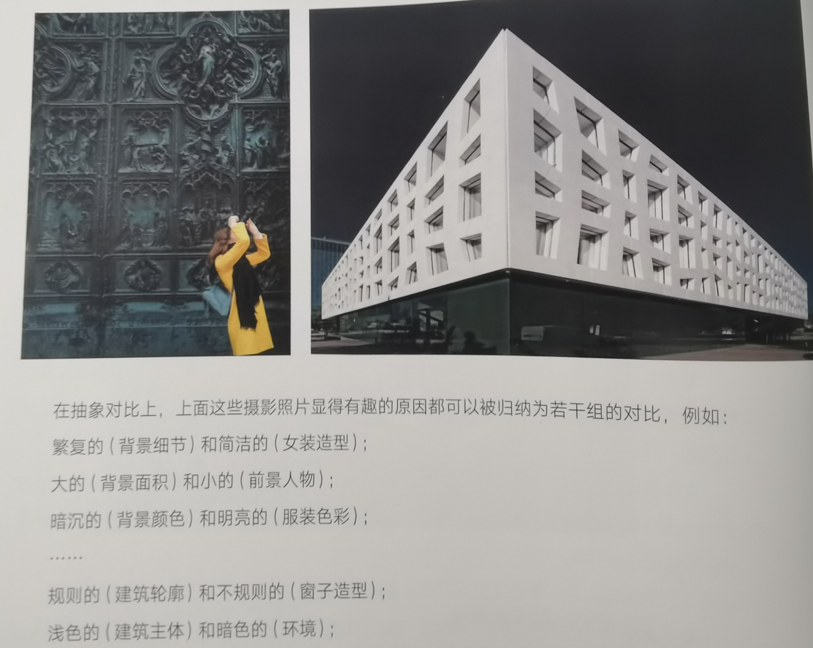
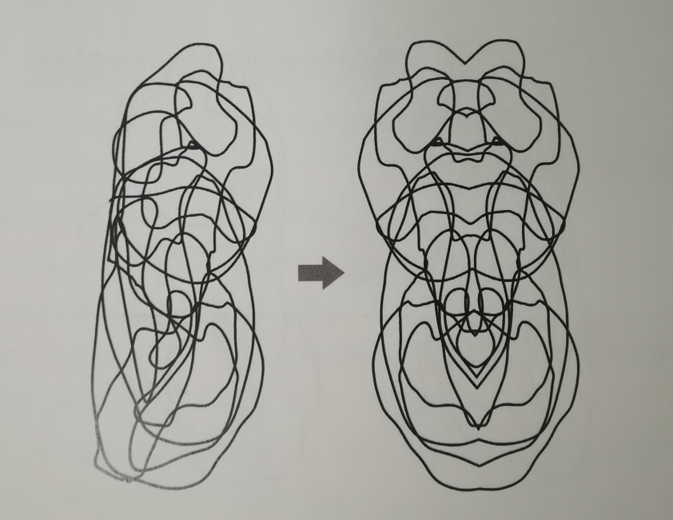

4.审美与构成
1.审美趣味与抽象对比
具象的描述方式关注的是内容(南瓜,破旧木板)
抽象的描述方式更多是关注这些内容在形状和色彩上的基本特征(低饱和灰色色块.明亮橙红色色块)
1.抽象对比关系的概念
一组一组对比关系的协调
大的和小的,多的和少的,疏的和密的,方的和圆的.鲜艳的和灰暗的.对比越和谐越舒服.

2.利用抽象与对比关系使图像变得有趣
一个混乱的线赋予一定规律之后立马就变得耐看了,这可能是因为人的本能就回去寻找规律,所以只要出现某些有规律的东西,你的大脑的反馈就会试图找到当中的规律,所以画面就"耐看"了.
